Back to main

Subaru Sambar — микровэн, выпускающийся с 1961 года японской компанией Subaru.
Содержание
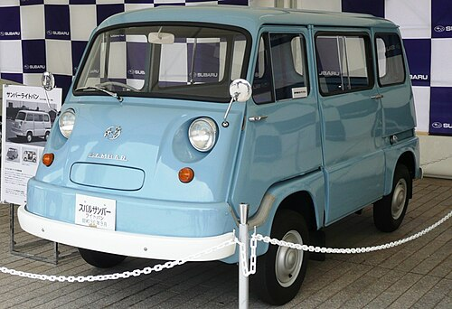
Subaru Sambar дебютировал в 1960 году на Токийском автосалоне. Автомобиль имел независимую подвеску на всех четырёх колёсах, заднемоторную компоновку, задний привод и однообъёмный кузов, созданный на базе Subaru 360. Шасси имело лонжеронную раму с задней торсионной подвеской. Положение рычага переключения передач на задней передаче было не правосторонним, как на других моделях, а левосторонним. Доступ к моторному отсеку осуществлялся через люк внутри автомобиля. Максимальная мощность двухтактного двигателя EK составляла 13,2 кВт (17,8 л. с.). Как и в случае с Subaru 360, передние двери открывались назад. Задние двери открывались вперёд. Также имелись временные двухъярусные кровати.
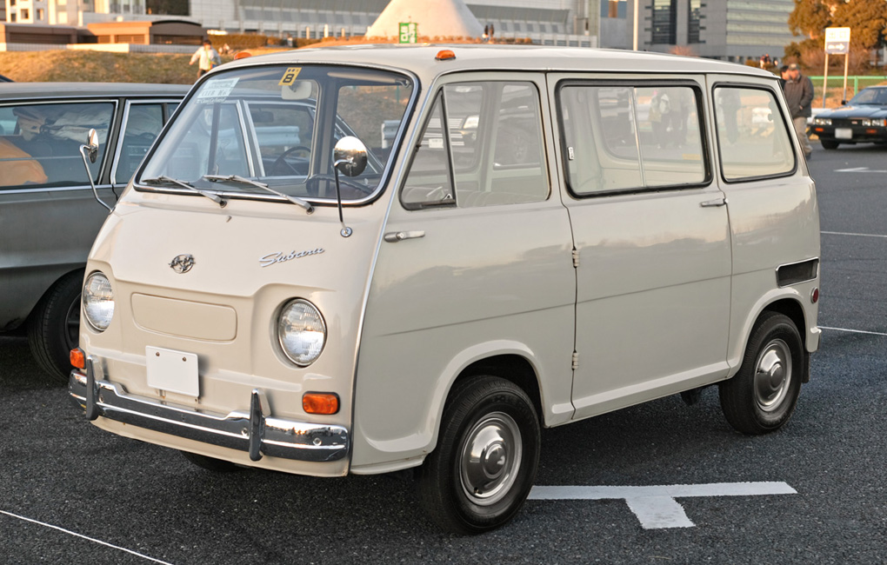
Второе поколение Subaru Sambar дебютировало в январе 1966 года. В автомобилях применялся двигатель EK31 объёмом 356 см3, мощностью 14,7 кВт (19,7 л. с.), который с июля 1964 года устанавливался на Subaru 360. С 1968 года автомобили оснащались двигателем EK33 мощностью 19,1 кВт (25,6 л. с.).
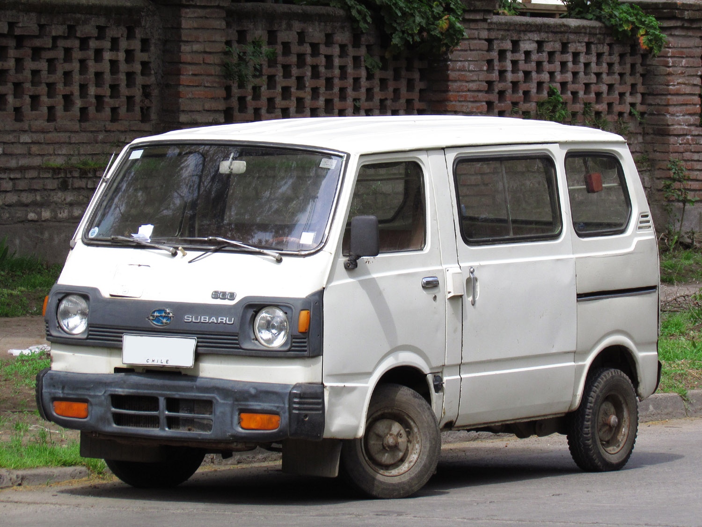
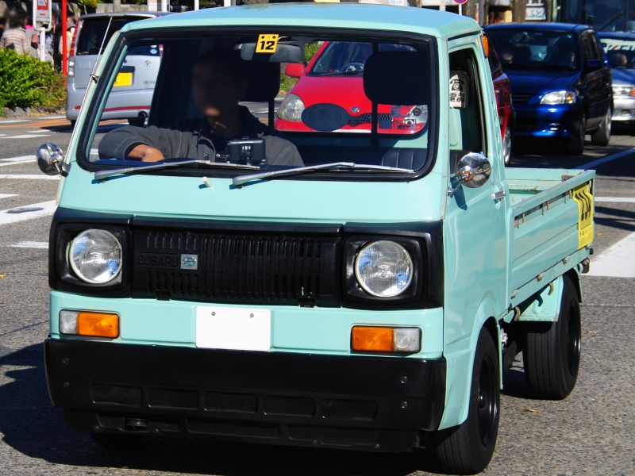
Автомобили Subaru Sambar третьего поколения были запущены в производство 10 февраля 1973 года. Изначально автомобили оснащались двухтактным двухцилиндровым двигателем EK34 объёмом 356 см3, но уже с водяным охлаждением (до этого охлаждение было воздушным). Мощность двигателя составляет 21 кВт (28 л. с.) при 5500 об/мин. Пикапы получили индекс K71, а фургоны — K81.
С февраля 1976 года автомобили Subaru Sambar третьего поколения оснащались четырёхтактным двигателем EK21 с водяным охлаждением, представленным в Rex для снижения выбросов. Мощность двигателя составляет 21 кВт (28 л. с.) при 7500 об/мин, однако, в отличие от двухтактного двигателя EK34, крутящий момент был значительно снижен. В мае 1976 года, в связи со вступлением в силу изменений в законодательстве, автомобили стали оснащаться двигателем EK22 рабочим объёмом 490 см3. Новое название — Sambar 5 (кодовое обозначение пикапа — K75, кодовое обозначение микроавтобуса — K76, а кодовое обозначение фургона — K85). На экспортных рынках автомобили носили название Subaru 500. В марте 1977 года Sambar 5 был заменён моделью Sambar 550 (кодовое обозначение — K77/87) с двигателем EK23 объёмом 550 см3. На экспорт Sambar 550 поставлялся под названием Subaru 600.
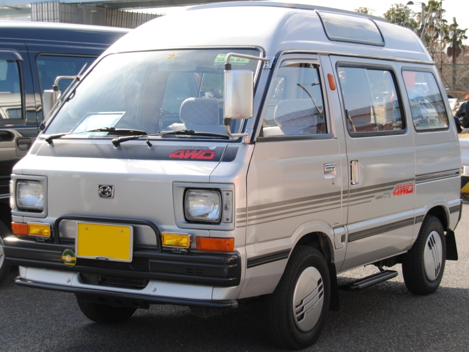
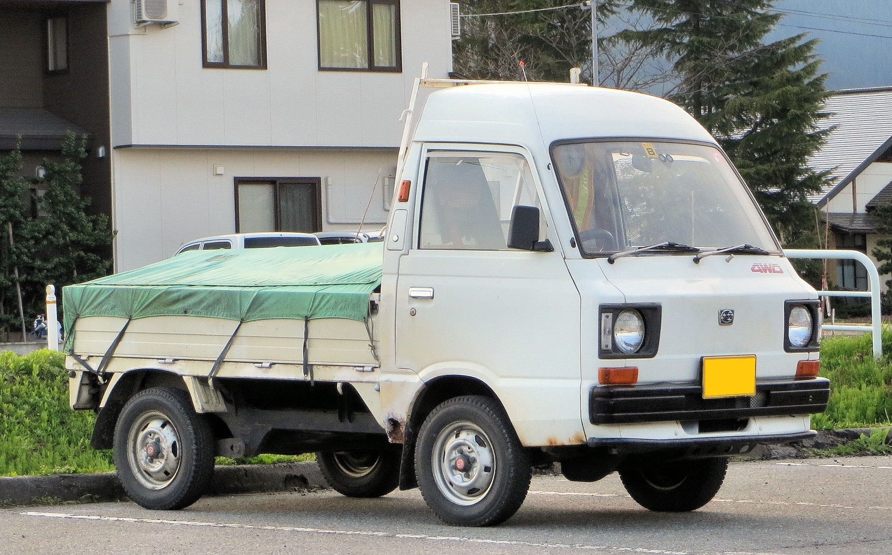
Автомобили Subaru Sambar четвёртого поколения (KR) были запущены в производство 9 мая 1982 года. Фургоны «Try» имели высокую или обычную крышу, в то время как микроавтобусы имели высокую крышу. Подвеска автомобилей независимая, с амортизационными стойками Макферсона для передних колёс. На всех четырёх колёсах расположены барабанные тормоза. Размер колёс был увеличен с 10 до 12 дюймов. Полноприводные модели имели двухступенчатую раздаточную коробку, в то время как модификации Sambar Try FL и FX имели автоматическое сцепление.
На внутреннем японском рынке автомобили Subaru Sambar четвёртого поколения оснащались двухцилиндровым двигателем EK23 объёмом 544 см3, мощностью 21 кВт (28 л. с.). Экспортные версии, получившие название Subaru 700, оснащались тем же двигателем мощностью 23 кВт (31 л. с.) и крутящим моментом 52 Н·м при 3500 об/мин.
В апреле 1989 года в моторную гамму Sambar был добавлен шестиклапанный двигатель EN05 мощностью 25 кВт (34 л. с.), который позже стал применяться в Rex.
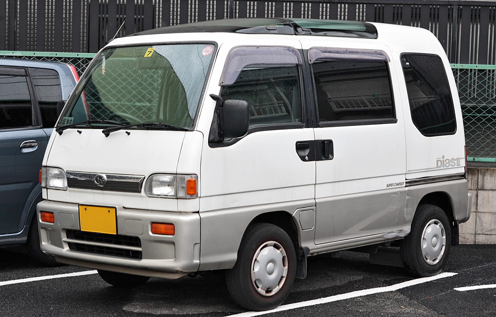
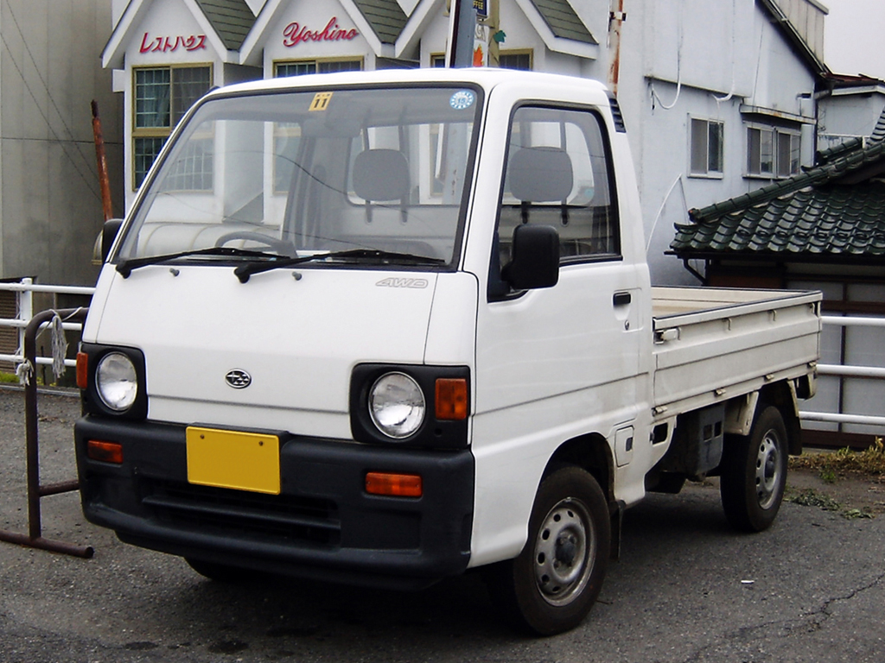
Автомобили Subaru Sambar пятого поколения были запущены в производство в 1990 году. Требования к объёму двигателя были ужесточены, и объём двигателя был увеличен до 660 см3. Полноприводная версия продавалась под названием Subaru Dias Wagon. В Японии в рекламе снималась женщина-комик Кунико Ямада.
Subaru Sambar пятого поколения, равно как и Subaru Vivio, оснащён четырёхцилиндровым двигателем EN07 мощностью 29—40 кВт (40—55 л. с.). Коробка передач — бесступенчатая, с электронным управлением. Также имеются постоянный полный привод и вязкостная муфта.
С 1994 года автомобили оснащались двигателем EF12 SOHC объёмом 1200 см3, мощностью 34 кВт (46 л. с.). Вместимость составила 7 человек.
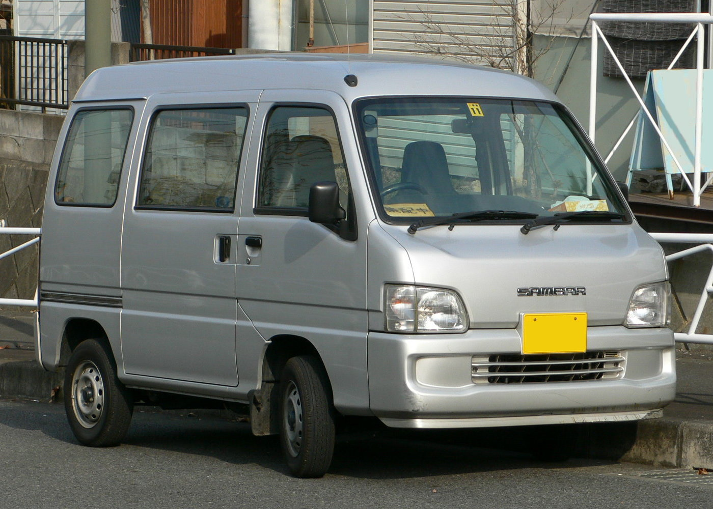
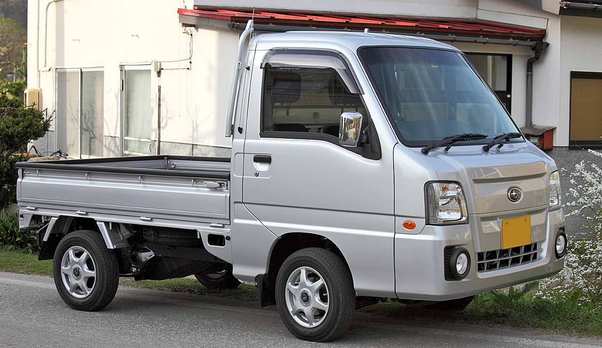
Автомобили Subaru Sambar шестого поколения поступили в продажу 2 мая 1999 года[18]. Годом ранее (в 1998 году) правила, регулирующие размеры кей-каров, позволили увеличить размер кузова. Версии 4WD Dias поставлялись только с трёхступенчатой автоматической трансмиссией, а мощность наддувного двигателя была увеличена до 57 л. с.
1 октября 1998 года ширина была увеличена с 1475 до 1480 мм.
18 июля 2008 года в стандартную комплектацию были включены двойные подушки безопасности для пассажиров, сидящих спереди, задние двери с электроприводом, электрические стеклоподъёмники и кожаный салон в топовых комплектациях.
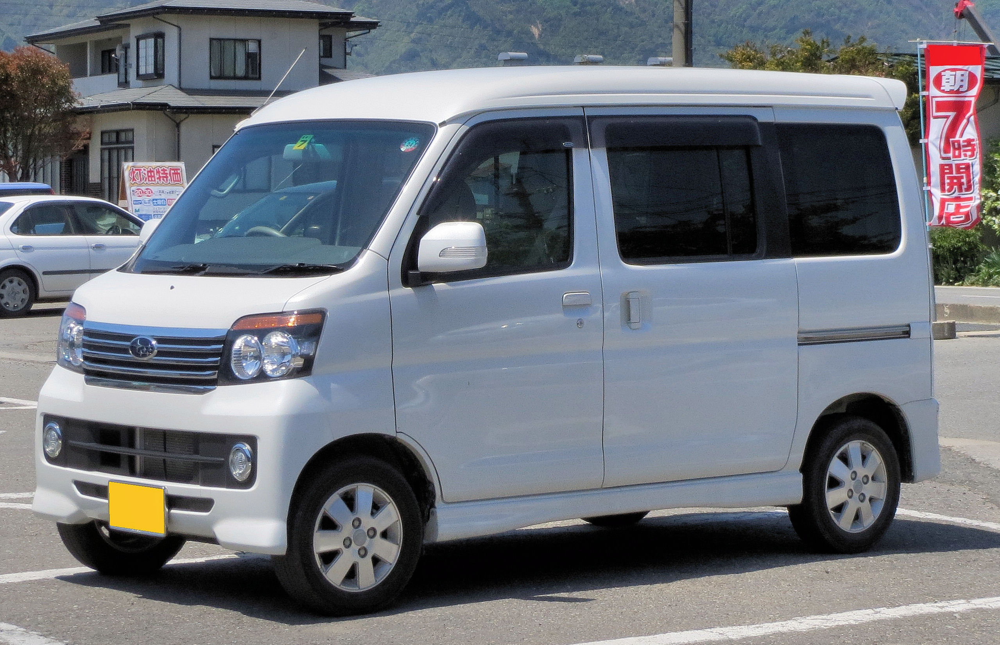
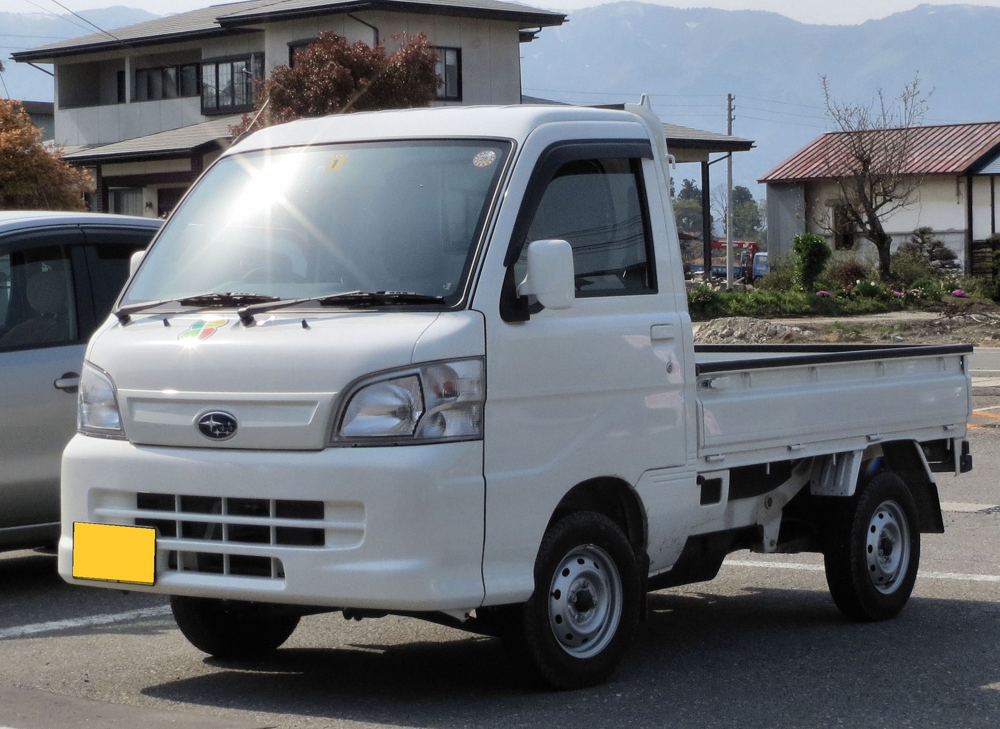
26 июня 2007 года в японской газете Nikkan Kogyo Shimbun появилась статья, в которой утверждалось, что из-за инвестиций Toyota в Fuji Heavy Industries, материнскую компанию Subaru, производство кей-каров, выпускаемых Subaru, прекратится. Вместо этого кей-кары будут выпускаться компанией Daihatsu, дочерней компанией Toyota, под маркой Subaru. Это позволило бы Subaru сосредоточиться на производстве полноприводных семейных автомобилей с горизонтально-оппозитными двигателями; продажи кей-каров почти полностью ограничены внутренним японским рынком и нерентабельны для такого небольшого производителя.
В сентябре 2009 года была презентована пассажирская модификация, получившая название Subaru Dias Wagon. Она являлась модернизированной версией фургона Daihatsu Atrai. 2 апреля 2012 года седьмое поколение Sambar было представлено на японском рынке. Автомобили являлись ребеджингом Daihatsu Hijet.
Компоновка автомобилей полукапотная. Двигатель был установлен спереди. Привод — задний или полный.
В 2014 году производство седьмого поколения Subaru Sambar было прекращено.
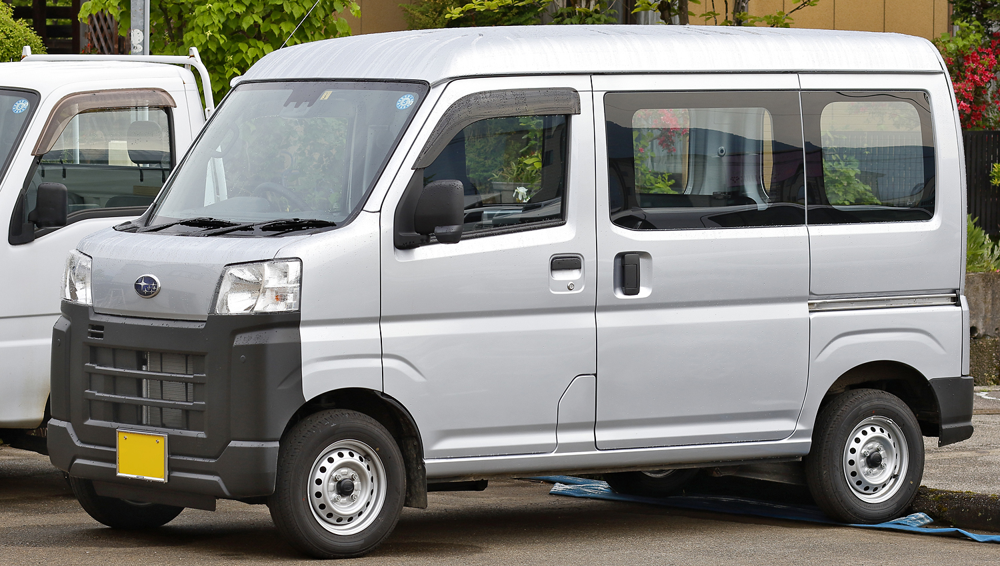
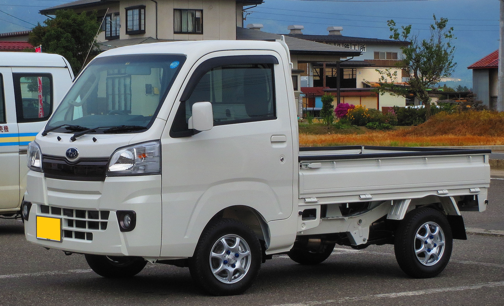
Subaru Sambar восьмого поколения, представленный 2 сентября 2014 года в Японии, является ребеджинговым вариантом Daihatsu Hijet Truck десятого поколения. С января 2022 года автомобиль является ребеджинговым вариантом Daihatsu Hijet Cargo одиннадцатого поколения, который выпускается на платформе DNGA. Dias Wagon был переименован в Sambar Dias.